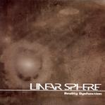

| Artist: | Linear Sphere |
| Title: | Reality Dysfunction |
| Label: | self produced/Hardebaran |
| Length(s): | 65 minutes |
| Year(s) of release: | 2005 |
| Month of review: | [05/2006] |
| 1) | Reversal | 10.38 |
| 2) | Father Pyramid | 4.49 |
| 3) | Ceremony Master | 6.23 |
| 4) | Divison Man | 4.21 |
| 5) | Life Of Gear | 7.41 |
| 6) | Marketing | 6.32 |
| 7) | From Space To Time | 25.10 |
Father Pyramid continues in the same vein, showing that the guitarist likes to include a jazzrock intermezzo here and there. Ceremony Master has a strong drive, with the vocalist reciting his lyrics fast and devoid of melody. I am thinking more of Fear Factory now, than progmetal. The music stays technically advanced, but that, of course, does not make a good song. Again, the guitarist fiddles around a bit too much for my tastes; the mean styling here is a blues oriented one, but played very fast.
The band does have a knack for opening right. Divison Man for instance opens in the best of Neurosis style: bells resounding, fast played rhythm guitar giving a strong sense of urgency. Life Of Gear gives us a bit of breathing space. Is this the ballad? It does seem so, opening as it does with acoustic guitar. Then the song powers up, and the vocalist manages to hit just the right note of desperation. The mysterious interlude is a dead ringer for Neurosis, but not the less welcome for it.
Marketing has heavy rhythm guitar, but in between the music is not even that heavy this time around. To make the listener a bit more confused, we even have some funky interludes.
From Space To Time is the closing epic, divided into four parts, totalling more than twenty-five minutes. The song opens strongly with Evolution, a pacey piece of guitar work, with the strong drive coming from the rhythm section. As you might know I am no enthusiast for the meandering style of guitar playing which is part of everyday jazzrock, but if you are: there is a large helping of that right here. I tend to like their metallic side more. A song of this length is likely to visit all the corners of the genre's this band wants to be in: the jazzrock, as mentioned, some more atmospheric interplay with melodious guitar work andsoftly brimming organ, the technocratic spoken words, the grating vocals, a Canterbury styled interlude on Fender Rhodes, in places the vocals remind me of Cairo, as does the music: plenty of bombast, hence.